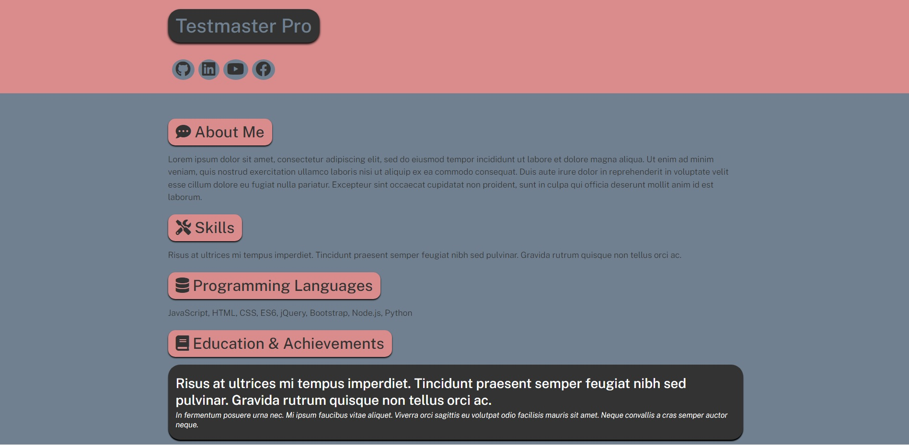
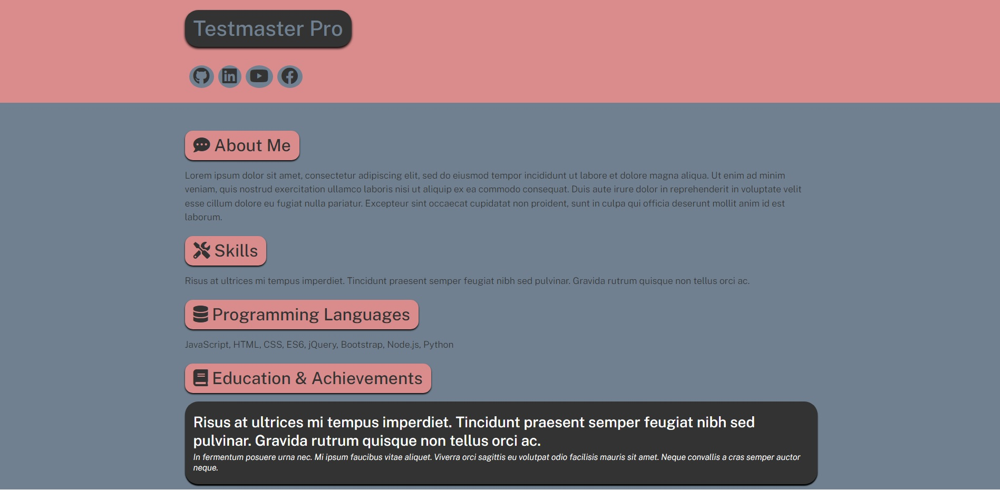
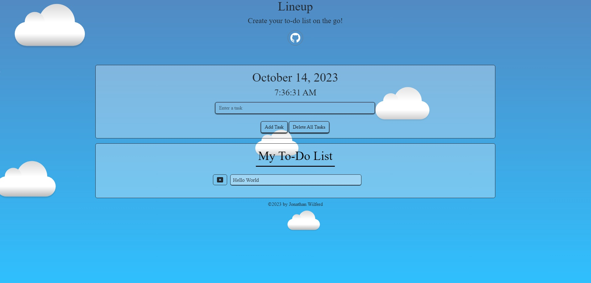
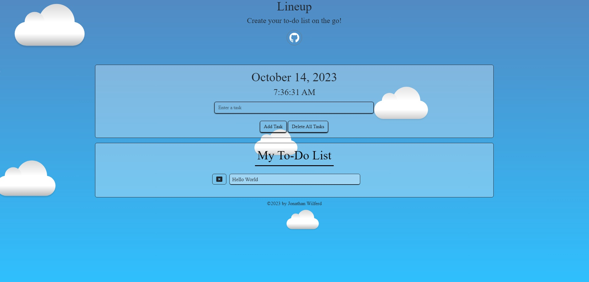

Full Stack Web Developer
About Me
I'm an avid gamer with a relentless drive to improve my creative prowess. It was this passion for gaming and technology that set me on a course into the world of programming.
In 2020, I took a significant step forward by enrolling in UCLA's Coding Bootcamp. By 2021, I proudly finished the cohort specialized and armed with a solid foundation in Full Stack development.
Since then, I've remained unwavering in my commitment to self-improvement, continuously enhancing my skills through:
- Udemy Courses
- Self-Study (Personal Projects, freeCodeCamp, etc)
- Seizing Freelancing Opportunities.
Skills
My journey in programming has been marked by an unwavering commitment to continuous learning and skill enhancement. Since successfully completing my course, I've passionately pursued opportunities to broaden my expertise. Through dedicated effort and a relentless pursuit of knowledge, I've had the privilege of creating and contributing to an extensive portfolio of over a dozen projects.
These projects not only demonstrate my technical prowess but also serve as a testament to my dedication to mastering the craft. From developing solutions on issues to tackling complex challenges, I take pride in each of my project's evolution and the invaluable experience gained along the way.
My commitment to advancing my skillset remains resolute, and I eagerly anticipate the ever-evolving landscape of technology as I continue to push the boundaries of what's possible to me.
Here's an interesting tidbit: The very portfolio you're currently exploring was crafted using a custom generator and template that I designed and developed myself! While the foundation comes from PortfolioForge, I've also made extensive edits and customizations to make it unique and hopefully inspire others to further personalize their own portfolios. It's the first featured project further down.
Programming Languages
These are the programming languages I actively engage with:
- JavaScript
- React
- HTML
- CSS
- SQL
- C#
Additionally these are some programming languages I'm actively learning:
- Python
- AWS
Projects
🌐 PortfolioForge.
Built With: JavaScript, HTML, CSS, ES6, Node, Inquirer (v.^9.2.8), FontAwesome (v.5.11.2)
 

In our rapidly changing world, the internet has deeply woven itself into our culture and society, making a professional online presence essential. PortfolioForge, a versatile and user-friendly portfolio generator, empowers developers and professionals to effortlessly showcase their skills and accomplishments, creating a lasting digital impact. Guided by Inquirer, users answer questions to tailor their portfolio for a ready-to-use web profile or a developer-friendly baseline.
View Project on GitHub🔮 Adventure-Alchemist
Built With: JavaScript, HTML, CSS, ES6, Bootstrap

Simplify and enhance the process of creating dungeon scenarios for your tabletop RPG. Whether you're a seasoned Dungeon Master or a curious player, Adventure Alchemist is built to help empower you to effortlessly create, save, and recall unique scenarios based on your liking. This app is built to be used on both desktop and mobile devices. Good luck with your scenario!
View Project on GitHub🌌 ForecastFinder
Built With: OpenWeather API, JavaScript, HTML, CSS, ES6, Bootstrap


Explore worldwide weather conditions with ForecastFinder, powered by OpenWeather. Get current and five-day forecasts for any location, save searches, and receive color-coded responses. Built to be used on Desktop and Mobile.
View Project on GitHub📝 Lineup
Built With: JavaScript, HTML, CSS, jQuery, Bootstrap
 

Head in the cloud, need a To-Do list to help keep you organized? Checkout Lineup, a productivity app where users can create and edit tasks and delete an entry when necessary. Built alongside this app is a fun front-end design. Built to be used on Desktop and Mobile use!
View Project on GitHubWhile these represent some of my most notable work, there's a plethora of equally impressive projects waiting for your exploration on my GitHub page.